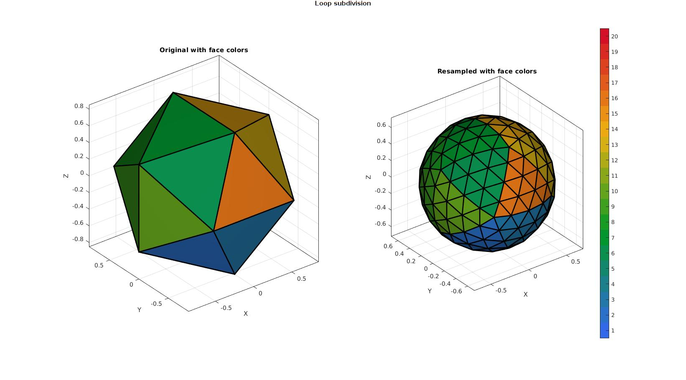
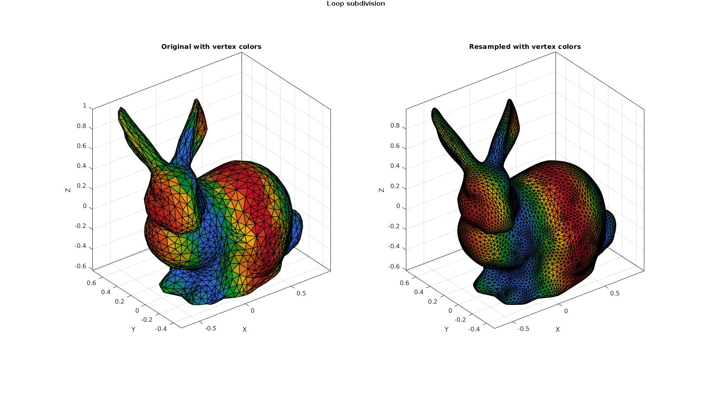
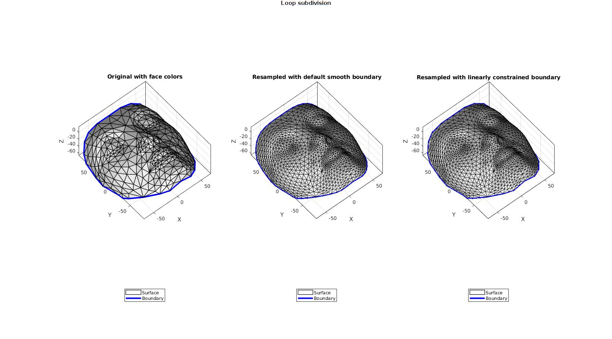
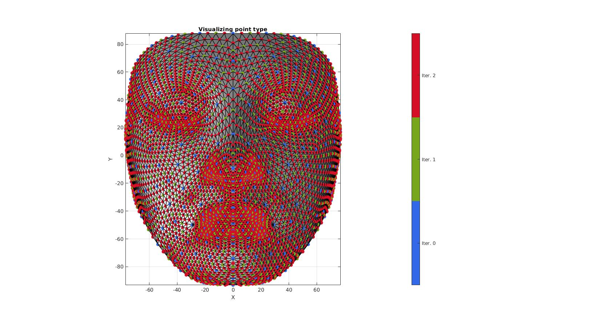
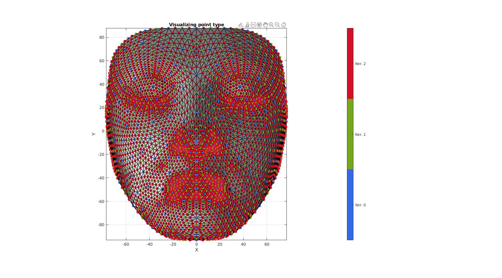
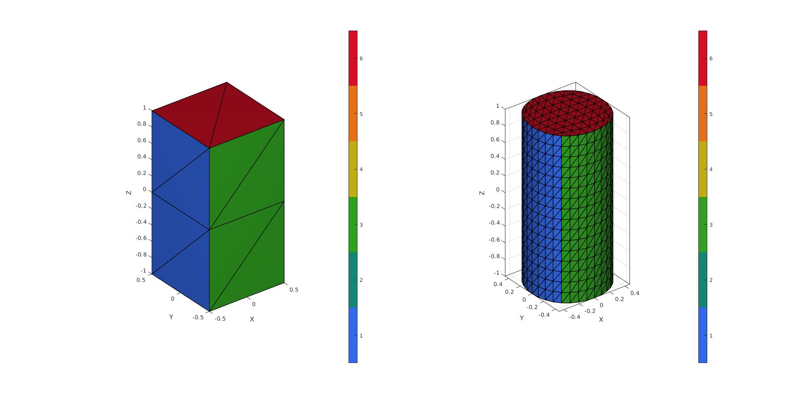

subTriLoop
Below is a demonstration of the features of the subTriLoop function
Contents
- Syntax
- Description
- Examples
- Example: Refining an icosahedron to illustrate smoothing effect
- Example: Refinement and maintenance of face color data
- Example: Refinement and resampling of vertex data
- Example: Forcing maintenance of boundary
- Example: Study vertex type
- Example: Constraining faces to subdivide "linearly" (shape maintaining)
- Example: Constraining faces but alter boundary of constrained
Syntax
[Fs,Vs,Cs]=subTriLoop(F,V,n,fixBoundaryOpt);
Description
The subTriLoop function enables refinement of triangulated data using the smooth refinement method by Loop et al. 1987 https://www.microsoft.com/en-us/research/wp-content/uploads/2016/02/thesis-10.pdf
The input faces and vertices are defined by F and V respectively. Each triangle is split into 4 sub-triangles.
Examples
clear; close all; clc;
Plot Settings
fontSize=10;
Example: Refining an icosahedron to illustrate smoothing effect
[V,F]=platonic_solid(4,1); n=0:1:3; %Number of refinement steps cFigure; gtitle('Loop subdivision') for q=1:1:numel(n) [Fs,Vs]=subTriLoop(F,V,n(q)); subplot(2,2,q); hold on; title([num2str(n(q)),' split iterations'],'FontSize',fontSize); hp1=gpatch(F,V,'none','k',1,2); hp2=gpatch(Fs,Vs,'bw','k',1,2); axisGeom(gca,fontSize); camlight headlight; legend([hp1 hp2],{'Original','Refined'}) end drawnow;

Example: Refinement and maintenance of face color data
[V,F]=platonic_solid(4,1); CF=(1:1:size(F,1))'; %Face color data n=2; %Number of refinement steps [Fs,Vs,Cs]=subTriLoop(F,V,n); CFs=CF(Cs); cFigure; gtitle('Loop subdivision') subplot(1,2,1); hold on; title('Original with face colors','FontSize',fontSize); gpatch(F,V,CF,'k',1,2); axisGeom(gca,fontSize); camlight headlight; drawnow; subplot(1,2,2); hold on; title('Resampled with face colors','FontSize',fontSize); gpatch(Fs,Vs,CFs,'k',1,2); colormap gjet; icolorbar; axisGeom(gca,fontSize); camlight headlight; drawnow;
Example: Refinement and resampling of vertex data
[F,V]=stanford_bunny; V=V-mean(V,1); V=V./max(V(:)); CV=sin(2*pi*V(:,1)); n=1; %Number of refinement steps VI=[V CV]; %Append vertex data as column(s) [Fs,VIs]=subTriLoop(F,VI,n); CVs=VIs(:,4); Vs=VIs(:,1:3); cFigure; gtitle('Loop subdivision') subplot(1,2,1); hold on; title('Original with vertex colors','FontSize',fontSize); gpatch(F,V,CV,'k',1,1); axisGeom(gca,fontSize); camlight headlight; colormap gjet; drawnow; subplot(1,2,2); hold on; title('Resampled with vertex colors','FontSize',fontSize); gpatch(Fs,Vs,CVs,'k',1,1); axisGeom(gca,fontSize); camlight headlight; colormap gjet; drawnow;
Example: Forcing maintenance of boundary
[F,V]=graphicsModels(10); n=1; %Number of refinement steps [Fs,Vs]=subTriLoop(F,V,n); fixBoundaryOpt=1; %Option to constrain boundary to be linearly sampled [Fs2,Vs2]=subTriLoop(F,V,n,fixBoundaryOpt);
cFigure; gtitle('Loop subdivision') subplot(1,3,1); hold on; title('Original with face colors','FontSize',fontSize); hp1=gpatch(F,V,'w','k',1,1); hp2=gpatch(patchBoundary(F,V),V,'none','b',1,3); axisGeom(gca,fontSize); camlight headlight; legend([hp1 hp2],{'Surface','Boundary'},'Location','SouthOutside'); view([-40 55]); zoom(1.1); subplot(1,3,2); hold on; title('Resampled with default smooth boundary','FontSize',fontSize); hp1=gpatch(Fs,Vs,'w','k',1,1); hp2=gpatch(patchBoundary(Fs,Vs),Vs,'none','b',1,3); hp2.EdgeAlpha=0.9; axisGeom(gca,fontSize); camlight headlight; legend([hp1 hp2],{'Surface','Boundary'},'Location','SouthOutside'); view([-40 55]); zoom(1.1); subplot(1,3,3); hold on; title('Resampled with linearly constrained boundary','FontSize',fontSize); hp1=gpatch(Fs2,Vs2,'w','k',1,1); hp2=gpatch(patchBoundary(Fs2,Vs2),Vs2,'none','b',1,3); hp2.EdgeAlpha=0.9; axisGeom(gca,fontSize); camlight headlight; legend([hp1 hp2],{'Surface','Boundary'},'Location','SouthOutside'); view([-40 55]); zoom(1.1); drawnow;
Example: Study vertex type
An optional 4th output can provide "vertex labels", these define the vertex origins, i.e. whether they stem from the initial coordinates (iteration 0), or from iteration n.
[F,V]=graphicsModels(10);
n=2; %Number of refinement steps
[Fs,Vs,~,CV]=subTriLoop(F,V,n);
cFigure; hold on; title('Visualizing point type','FontSize',fontSize); gpatch(Fs,Vs,'w','k',1,1); scatterV(Vs,50,CV,'filled') axisGeom(gca,fontSize); camlight headlight; view(2); colormap gjet; [~,hc]=icolorbar; hc.TickLabels={'Iter. 0';'Iter. 1';'Iter. 2'}; drawnow;
Example: Constraining faces to subdivide "linearly" (shape maintaining)
% Using |triBox| to build the patch model
[F,V,faceBoundaryMarker]=triBox([2 2 2],1);
n=2; %Number of refinement steps logicConstrain=(faceBoundaryMarker==5); %Logic for faces to subdivide linearly [Fs,Vs,Cs,CV]=subTriLoop(F,V,n,0,logicConstrain); faceBoundaryMarker_sub=faceBoundaryMarker(Cs); %Get boundary markers for refined mesh
cFigure; subplot(1,2,1); hold on; gpatch(F,V,faceBoundaryMarker,'k',1,1); axisGeom(gca,fontSize); camlight headlight; colormap(gca,gjet(6)); icolorbar; subplot(1,2,2); hold on; gpatch(Fs,Vs,faceBoundaryMarker_sub,'k',1,1); axisGeom(gca,fontSize); camlight headlight; colormap(gca,gjet(6)); icolorbar; drawnow;
Example: Constraining faces but alter boundary of constrained
% Using |triBox| to build the patch model
[Fq,V,faceBoundaryMarker_q]=quadBox([1 1 2],[1 1 2]);
F=[Fq(:,[1 2 3]);Fq(:,[3 4 1]);];
faceBoundaryMarker=repmat(faceBoundaryMarker_q,2,1);
n=3; %Number of refinement steps logicConstrain=ismember(faceBoundaryMarker,[5,6]); %Logic for faces to subdivide linearly indConstrain=find(logicConstrain); indNotConstrain=find(~logicConstrain); [Fs1,Vs1,Cs1]=subTriLoop(F(logicConstrain,:),V,n); faceBoundaryMarker_sub1=faceBoundaryMarker(indConstrain(Cs1)); %Get boundary markers for refined mesh [Fs2,Vs2,Cs2]=subTriLoop(F(~logicConstrain,:),V,n); faceBoundaryMarker_sub2=faceBoundaryMarker(indNotConstrain(Cs2)); %Get boundary markers for refined mesh [Fs,Vs,faceBoundaryMarker_sub]=joinElementSets({Fs1,Fs2},{Vs1,Vs2},{faceBoundaryMarker_sub1,faceBoundaryMarker_sub2}); [Fs,Vs]=patchCleanUnused(Fs,Vs); [Fs,Vs]=mergeVertices(Fs,Vs);
cFigure; subplot(1,2,1); hold on; gpatch(F,V,faceBoundaryMarker,'k',1,1); axisGeom(gca,fontSize); camlight headlight; colormap(gca,gjet(6)); icolorbar; subplot(1,2,2); hold on; gpatch(Fs,Vs,faceBoundaryMarker_sub,'k',1,1); axisGeom(gca,fontSize); camlight headlight; colormap(gca,gjet(6)); icolorbar; drawnow;

GIBBON www.gibboncode.org
Kevin Mattheus Moerman, gibbon.toolbox@gmail.com
GIBBON footer text
License: https://github.com/gibbonCode/GIBBON/blob/master/LICENSE
GIBBON: The Geometry and Image-based Bioengineering add-On. A toolbox for image segmentation, image-based modeling, meshing, and finite element analysis.
Copyright (C) 2006-2021 Kevin Mattheus Moerman and the GIBBON contributors
This program is free software: you can redistribute it and/or modify it under the terms of the GNU General Public License as published by the Free Software Foundation, either version 3 of the License, or (at your option) any later version.
This program is distributed in the hope that it will be useful, but WITHOUT ANY WARRANTY; without even the implied warranty of MERCHANTABILITY or FITNESS FOR A PARTICULAR PURPOSE. See the GNU General Public License for more details.
You should have received a copy of the GNU General Public License along with this program. If not, see http://www.gnu.org/licenses/.